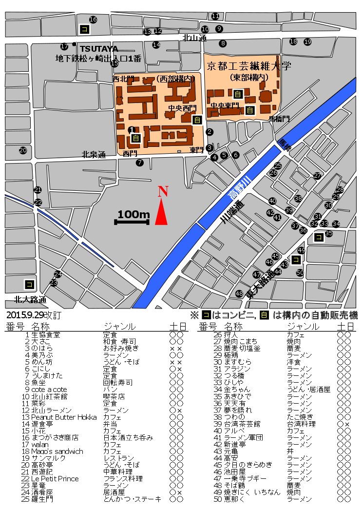

| ・ Lunch map (H27.09.29) | ||
来月開催する学会に向けてLunch mapを更新しました．前回ウチで卒業研究発表講演会と定時総会講演会開催時に作成したLunch mapは助教の人が作成しましたが，今回はM1のTNくんが作成しました．今回の改訂では，土日開催に合わせて土日に空いているかどうか判るようになりました．TNくんのアイデアで，コンビニと構内の自販機も追加です．4年でお店が出来たり無くなったりしています．助教の人にとって，去年4月末に閉店したオレンジが一番の痛手だったそうです．
|
||
|

|
||